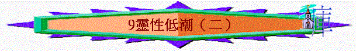

教師版
Ｃ）克服靈性低潮：靈性低潮的處理方法並不困難，但又卻是困難，因在乎個人肯不肯面對，及願不願意付代價，更重要的是個人如何面對信仰。
１）預防的方法
ａ）建立穩定的靈修：
面對靈修觀念上的錯誤，我們需要的是調校正自己的心態及方法，因靈性低潮多是因著不穩定的靈修所引發的，人保持常與人接觸，人的靈性就不至失落了。正確的靈修生活必定使人越發愛慕親近，要養成有靈修習慣的生活，使靈修生活成為自己的生活必需。可以與其他肢體一同靈修及分享靈修心得，這可以擴闊自己的眼光，又使自己保持一個醒覺的心靈。ｂ）保持對主的專一：
在我們的信仰中，我們要把我們的愛全投在主身上，建立一個有情愛的相交生活，要多默想主自己的寶貴，又常用真理來判別事物，免得自己的心被勾引離開 神，要常醒察自己對主的心是石單純及專一。ｃ）常有主內的代禱：
我們要在自己的私禱中，為自己的靈性及肢體的靈性來守望禱告，求主保守主內的肢體們都一同在主面前得恩。因彼此代求是得 神益悅的人，人常有禱告醒察的心，較不易落入迷惑中。
２）克服的方法
ａ）休息與安息：
疲倦是會使人乏力的，人在長期的疲勞及壓力下，自然會產生靈性低潮。尤其在高潮過後，更易有靈性低潮的情形出現，因再無力面對接踵而來的困難，又因此時為最不儆醒之時，易給魔鬼留地步。故適當及合理的休息是需要的，真正的休息不單是身體上，也是心靈上在主前有安靜及安息，要接受事實的發生，並把一切的重擔都卸給 神。但要平衡的是自己是休息或偷懶，勿過緊的要求自己而不肯停下來休息，也不要太過放鬆而成了閒懶的人。ｂ）盡情的傾訴：
人會因內裡蘊藏太多不滿及不快，這些從人、事、物而來的壓力會導致靈性出現低沉。我們有時因著不便或害怕表露情緒，引致內裡積鬱太過，為自己靈性危機留下伏筆。另方面，在失敗中的掙扎既想找人幫助，又害怕被人知道，這造成孤立無援的感覺。我們需實在要每時每刻向主傾心吐意，把一切的不滿與不快全傾訴出來。我們也需要有屬靈的知己，可以分享自己的內心世界，把自己的得與失都分享出來。ｃ）合理的認識：
要看自己合乎中庸，這樣的信仰生活才會帶給人喜樂，要合理的面對自己的長處及短處，不要為自己製造壓力。因比較及自責而來的靈性低潮，需要對自己有正確的評估才可免致落入幽谷中。要為 神所賜與而感謝 神，也要為 神所沒有賜與的而感恩，要為 神希望我們得著的來禱求。ｄ）積極的思想：
在面對灰暗的思想時，要第一時間的排斥，勿讓這些思想停留，因撒但會使用這些來動搖人心。也不要去思想這些事，因越思想越灰暗。要謹記 神是使人有盼望的 神，在祂沒有難成的事，並總在主裡找到出路。ｅ）離棄與歸向：
在面對罪惡及世俗的纏累，惟一的方法是離棄罪惡歸向 神，人的問題是自己無力的勝過罪惡，但勿忘記主耶穌已得勝罪惡，凡投靠祂的人必能得勝有餘。人若離棄罪而沒有歸向 神，人不久便會重蹈覆轍。這是我們看重甚麼及抉擇的時候，要提醒自己健全的信仰是需要付代價，捨棄世物而得屬靈的福是必然的。ｆ）立刻的起來：
在那裡跌倒，就要在那裡起來，一錯就立刻回轉，就不至泥足深陷了。即時的認罪是重要的，勿讓罪在我們心中有成長的機會，更是要順服聖靈的提醒及引導。
學生版
Ｃ）克服靈性低潮：
１）預防的方法
ａ）建立穩定的靈修：
ｂ）保持對主的專一：
ｃ）常有主內的代禱：
２）克服的方法
ａ）休息與安息：
ｂ）盡情的傾訴：
ｃ）合理的認識：
ｄ）積極的思想：
ｅ）離棄與歸向：
ｆ）立刻的起來：